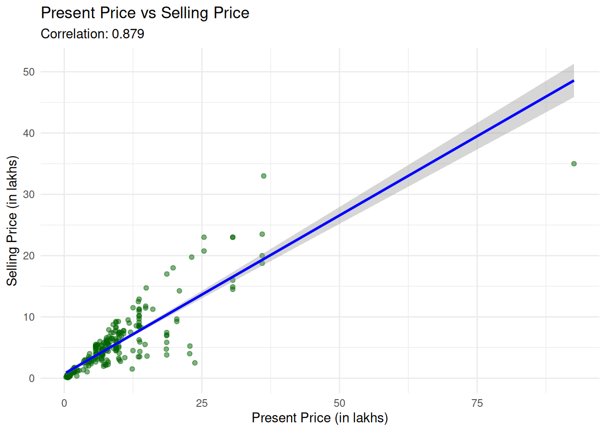
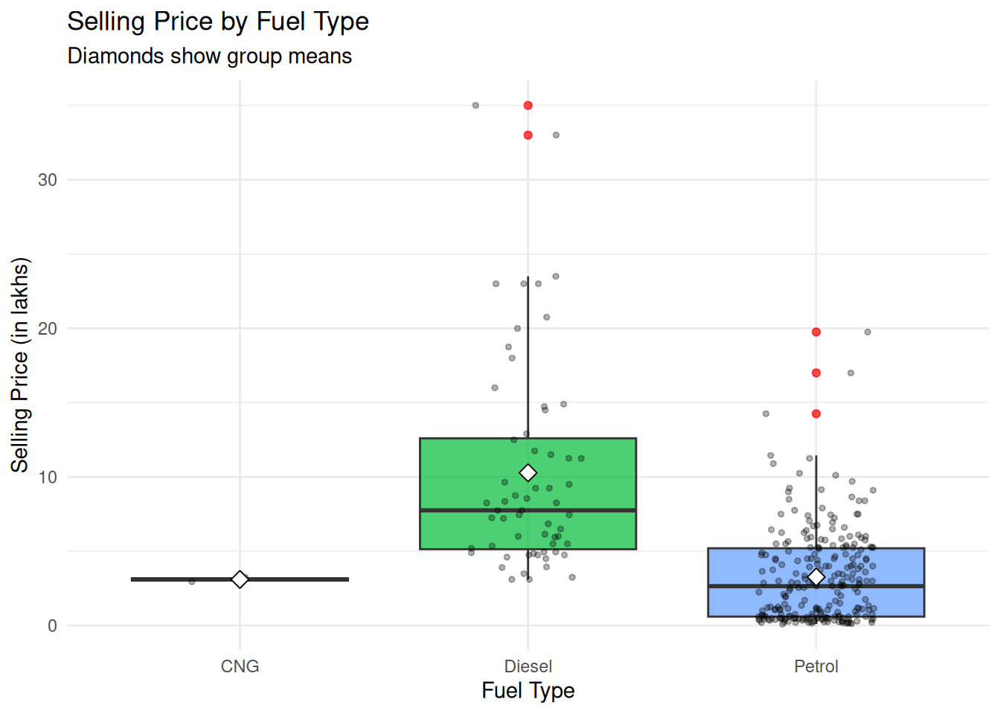
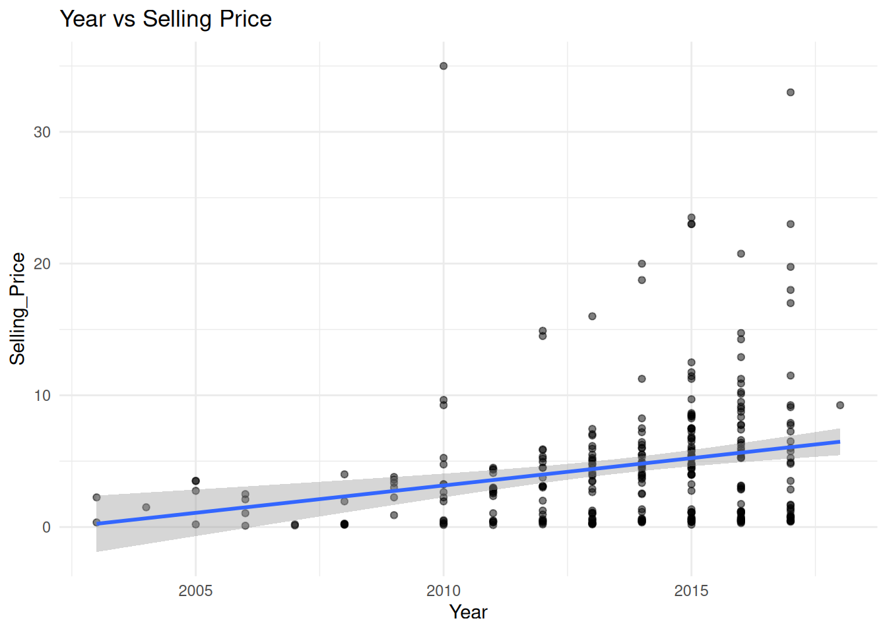

Our car sales dataset contains: - Selling_Price: Price at which car was sold - Present_Price: Current market price - Kms_Driven: Total kilometers driven - Fuel_Type: Petrol, Diesel, or CNG - Transmission: Manual or Automatic - Owner: Number of previous owners - Year: Year of manufacture
Part 1: Exploratory Data Analysis (30 mins)
Cross-Tabulation (Contingency Tables)
Cross-tabulation shows the relationship between two categorical variables.
# Basic cross-tabulation with countstable(car_data$Fuel_Type, car_data$Transmission)
# Add row and column totalsaddmargins(table(car_data$Fuel_Type, car_data$Transmission))
Automatic Manual Sum
CNG 0 2 2
Diesel 12 48 60
Petrol 28 211 239
Sum 40 261 301
Enhanced Cross-Tabulation with Percentages
library(modelsummary)# Row percentages - "Of cars with this fuel type, what % have each transmission?"crosstab_row <-datasummary_crosstab( Fuel_Type ~ Transmission, statistic =~ N +1+Percent("row"),data = car_data)crosstab_row
Fuel_Type
Automatic
Manual
All
CNG
N
0
2
2
% row
0.0
100.0
100.0
Diesel
N
12
48
60
% row
20.0
80.0
100.0
Petrol
N
28
211
239
% row
11.7
88.3
100.0
# Column percentages - "Of cars with this transmission, what % have each fuel type?"crosstab_col <-datasummary_crosstab( Fuel_Type ~ Transmission,statistic =~ N +1+Percent("col"),data = car_data)crosstab_col
Fuel_Type
Automatic
Manual
All
CNG
N
0
2
2
% col
0.0
0.8
0.7
Diesel
N
12
48
60
% col
30.0
18.4
19.9
Petrol
N
28
211
239
% col
70.0
80.8
79.4
💡 Interpretation Tips: - Look for cells with notably high or low counts - Row % shows distribution within each row category - Column % shows distribution within each column category
Correlation Analysis
Correlation measures the strength of relationship between two numeric variables.
# Correlation between Selling Price and Kilometers Drivencor.test(car_data$Selling_Price, car_data$Kms_Driven)
Pearson's product-moment correlation
data: car_data$Selling_Price and car_data$Kms_Driven
t = 0.50491, df = 299, p-value = 0.614
alternative hypothesis: true correlation is not equal to 0
95 percent confidence interval:
-0.08414286 0.14177160
sample estimates:
cor
0.02918709
Understanding Correlation: - Range: -1 to +1 - Positive (0 to +1): Variables increase together - Negative (-1 to 0): One increases, other decreases - Near zero: No linear relationship
Strength Guide: - 0.0 to 0.3: Weak - 0.3 to 0.7: Moderate - 0.7 to 1.0: Strong
# Correlation matrix for multiple variablesnumeric_vars <- car_data %>%select(Selling_Price, Present_Price, Kms_Driven, Year)cor_matrix <-cor(numeric_vars, use ="complete.obs")round(cor_matrix, 3)
# Scatter plot with correlationggplot(car_data, aes(x = Present_Price, y = Selling_Price)) +geom_point(alpha =0.5, color ="darkgreen") +geom_smooth(method ="lm", se =TRUE, color ="blue") +labs(title ="Present Price vs Selling Price",subtitle =paste("Correlation:", round(cor(car_data$Present_Price, car_data$Selling_Price), 3)),x ="Present Price (in lakhs)",y ="Selling Price (in lakhs)" ) +theme_minimal()
`geom_smooth()` using formula = 'y ~ x'

Part 2: T-Tests (30 mins)
What is a T-Test?
T-tests compare the means of two groups to see if they’re significantly different.
Example Question: Do automatic cars have different selling prices than manual cars?
Hypotheses
Null Hypothesis (H₀): No difference in average selling prices
Alternative Hypothesis (H₁): There IS a difference in average selling prices
Running the T-Test
# Independent samples t-testt_test_result <-t.test(Selling_Price ~ Transmission, data = car_data)t_test_result
Welch Two Sample t-test
data: Selling_Price by Transmission
t = 3.9055, df = 41.248, p-value = 0.0003417
alternative hypothesis: true difference in means between group Automatic and group Manual is not equal to 0
95 percent confidence interval:
2.650698 8.325318
sample estimates:
mean in group Automatic mean in group Manual
9.420000 3.931992
Interpreting T-Test Results
Key Components: 1. t-statistic: How many standard errors separate the two means 2. p-value: - p < 0.05 → Significant difference (reject null hypothesis) - p > 0.05 → No significant difference 3. Confidence interval: Range where true difference likely falls 4. Sample means: Average for each group
Visualizing T-Test Results
# Boxplot comparisonggplot(car_data, aes(x = Transmission, y = Selling_Price, fill = Transmission)) +geom_boxplot(alpha =0.7) +labs(title ="Selling Price by Transmission Type",subtitle =paste("p-value:", round(t_test_result$p.value, 4)),x ="Transmission Type",y ="Selling Price (in lakhs)" ) +theme_minimal() +theme(legend.position ="none")
# A tibble: 2 × 5
Transmission Mean SD Median Count
<chr> <dbl> <dbl> <dbl> <int>
1 Automatic 9.42 8.76 5.8 40
2 Manual 3.93 3.78 3.25 261
Check T-Test Assumptions
# Visual check: Q-Q plots for normalitypar(mfrow =c(1, 2))qqnorm(car_data$Selling_Price[car_data$Transmission =="Manual"], main ="Q-Q Plot: Manual")qqline(car_data$Selling_Price[car_data$Transmission =="Manual"])qqnorm(car_data$Selling_Price[car_data$Transmission =="Automatic"], main ="Q-Q Plot: Automatic")qqline(car_data$Selling_Price[car_data$Transmission =="Automatic"])
Part 3: ANOVA (30 mins)
What is ANOVA?
ANOVA (Analysis of Variance) compares means across three or more groups.
Example Question: Do selling prices differ among different fuel types (Petrol, Diesel, CNG)?
Hypotheses
Null Hypothesis (H₀): All group means are equal
Alternative Hypothesis (H₁): At least one group mean differs
Running ANOVA
# One-way ANOVAanova_result <-aov(Selling_Price ~ Fuel_Type, data = car_data)summary(anova_result)
Df Sum Sq Mean Sq F value Pr(>F)
Fuel_Type 2 2365 1182.3 65.42 <2e-16 ***
Residuals 298 5386 18.1
---
Signif. codes: 0 '***' 0.001 '**' 0.01 '*' 0.05 '.' 0.1 ' ' 1
Interpreting ANOVA Results
Key Components: 1. F-statistic: Ratio of between-group to within-group variance 2. p-value (Pr(>F)): - p < 0.05 → At least one group differs significantly - p > 0.05 → No significant differences detected
Post-Hoc Tests (Which groups differ?)
If ANOVA is significant, use Tukey’s HSD to find which specific groups differ.
Tukey multiple comparisons of means
95% family-wise confidence level
Fit: aov(formula = Selling_Price ~ Fuel_Type, data = car_data)
$Fuel_Type
diff lwr upr p adj
Diesel-CNG 7.1785000 -0.01943167 14.376432 0.0507981
Petrol-CNG 0.1641841 -6.94626563 7.274634 0.9983704
Petrol-Diesel -7.0143159 -8.46029999 -5.568332 0.0000000
💡 Reading Tukey Results: - diff: Difference in means between groups - p adj: Adjusted p-value - p adj < 0.05 → Groups significantly differ - p adj > 0.05 → No significant difference - If confidence interval includes 0 → not significant
Visualize Tukey Results
# Plot Tukey confidence intervalsplot(tukey_result, las =1)
# Boxplot with individual pointsggplot(car_data, aes(x = Fuel_Type, y = Selling_Price, fill = Fuel_Type)) +geom_boxplot(alpha =0.7, outlier.color ="red") +geom_jitter(width =0.2, alpha =0.3, size =1) +stat_summary(fun = mean, geom ="point", shape =23, size =3, fill ="white", color ="black") +labs(title ="Selling Price by Fuel Type",subtitle ="Diamonds show group means",x ="Fuel Type",y ="Selling Price (in lakhs)" ) +theme_minimal() +theme(legend.position ="none")

How to Report Results
T-Test Example: “Automatic transmission cars (M = 7.5 lakhs) had significantly higher selling prices than manual transmission cars (M = 4.3 lakhs), t(298) = 6.82, p < .001.”
ANOVA Example: “Selling prices differed significantly across fuel types, F(2, 297) = 12.45, p < .001. Post-hoc tests showed diesel cars were more expensive than petrol (p = .002) and CNG cars (p < .001).”
Correlation Example: “There was a strong positive correlation between present price and selling price, r = .89, p < .001.”
Part 5: Practice and Q&A (10 mins)
Practice Tasks
Task 1: Cross-Tabulation
Create a cross-tabulation of Owner and Fuel_Type. What patterns do you see?
Pearson's product-moment correlation
data: car_data$Year and car_data$Selling_Price
t = 4.2021, df = 299, p-value = 3.495e-05
alternative hypothesis: true correlation is not equal to 0
95 percent confidence interval:
0.1264648 0.3401135
sample estimates:
cor
0.236141
# Visualizationggplot(car_data, aes(x = Year, y = Selling_Price)) +geom_point(alpha =0.5) +geom_smooth(method ="lm", se =TRUE) +labs(title ="Year vs Selling Price") +theme_minimal()
`geom_smooth()` using formula = 'y ~ x'

Task 3: T-Test
Test if there’s a difference in kilometers driven between Petrol and Diesel cars.
# Solution# Filter for just Petrol and Dieselpetrol_diesel <- car_data %>%filter(Fuel_Type %in%c("Petrol", "Diesel"))t.test(Kms_Driven ~ Fuel_Type, data = petrol_diesel)
Welch Two Sample t-test
data: Kms_Driven by Fuel_Type
t = 3.6053, df = 118.47, p-value = 0.0004574
alternative hypothesis: true difference in means between group Diesel and group Petrol is not equal to 0
95 percent confidence interval:
7591.172 26090.787
sample estimates:
mean in group Diesel mean in group Petrol
50369.92 33528.94
Task 4: ANOVA
Test if Present_Price differs across different Owner categories.
# Solutionanova_owner <-aov(Present_Price ~factor(Owner), data = car_data)summary(anova_owner)
Df Sum Sq Mean Sq F value Pr(>F)
factor(Owner) 2 448 223.88 3.037 0.0495 *
Residuals 298 21968 73.72
---
Signif. codes: 0 '***' 0.001 '**' 0.01 '*' 0.05 '.' 0.1 ' ' 1
# If significant, run TukeyTukeyHSD(anova_owner)
Tukey multiple comparisons of means
95% family-wise confidence level
Fit: aov(formula = Present_Price ~ factor(Owner), data = car_data)
$`factor(Owner)`
diff lwr upr p adj
1-0 -4.405655 -10.9104517 2.099141 0.2492163
3-0 16.008345 -4.2507288 36.267418 0.1518739
3-1 20.414000 -0.7973558 41.625356 0.0621132
Task 5: Complete Analysis
Compare Kms_Driven between Manual and Automatic transmission: 1. Calculate descriptive statistics 2. Run t-test 3. Create visualization
# 2. T-testt_test_kms <-t.test(Kms_Driven ~ Transmission, data = car_data)t_test_kms
Welch Two Sample t-test
data: Kms_Driven by Transmission
t = 1.4257, df = 40.25, p-value = 0.1617
alternative hypothesis: true difference in means between group Automatic and group Manual is not equal to 0
95 percent confidence interval:
-7755.905 44927.142
sample estimates:
mean in group Automatic mean in group Manual
53062.97 34477.36
# 3. Visualizationggplot(car_data, aes(x = Transmission, y = Kms_Driven, fill = Transmission)) +geom_boxplot(alpha =0.7) +labs(title ="Kilometers Driven by Transmission Type",subtitle =paste("p-value:", round(t_test_kms$p.value, 4)),x ="Transmission",y ="Kilometers Driven" ) +theme_minimal() +theme(legend.position ="none")
Challenge: Multi-Step Analysis
Investigate the relationship between car age and selling price: 1. Create an Age variable (2026 - Year) 2. Calculate correlation with Selling_Price 3. Create scatter plot with trend line 4. Group cars into “New” (Age < 5) and “Old” (Age >= 5) 5. Run t-test comparing selling prices
Pearson's product-moment correlation
data: car_data$Age and car_data$Selling_Price
t = -4.2021, df = 299, p-value = 3.495e-05
alternative hypothesis: true correlation is not equal to 0
95 percent confidence interval:
-0.3401135 -0.1264648
sample estimates:
cor
-0.236141
# 3. Scatter plotggplot(car_data, aes(x = Age, y = Selling_Price)) +geom_point(alpha =0.5, color ="blue") +geom_smooth(method ="lm", se =TRUE, color ="red") +labs(title ="Car Age vs Selling Price",subtitle =paste("Correlation:", round(cor_test$estimate, 3)),x ="Car Age (years)",y ="Selling Price (in lakhs)" ) +theme_minimal()
`geom_smooth()` using formula = 'y ~ x'
# 4. Create age groupscar_data <- car_data %>%mutate(Age_Group =ifelse(Age <5, "New", "Old"))# 5. T-testt.test(Selling_Price ~ Transmission, data = car_data)
Welch Two Sample t-test
data: Selling_Price by Transmission
t = 3.9055, df = 41.248, p-value = 0.0003417
alternative hypothesis: true difference in means between group Automatic and group Manual is not equal to 0
95 percent confidence interval:
2.650698 8.325318
sample estimates:
mean in group Automatic mean in group Manual
9.420000 3.931992
# Visualizationggplot(car_data, aes(x = Age_Group, y = Selling_Price, fill = Age_Group)) +geom_boxplot(alpha =0.7) +labs(title ="Selling Price: New vs Old Cars",x ="Age Group",y ="Selling Price (in lakhs)" ) +theme_minimal() +theme(legend.position ="none")
📚 Key Takeaways
✅ Cross-tabulation shows relationships between categorical variables
✅ Correlation measures strength of relationship between numeric variables (-1 to +1)
✅ T-tests compare means of two groups (p < 0.05 = significant)
✅ ANOVA compares means of 3+ groups
✅ Tukey’s HSD identifies which specific groups differ after ANOVA
✅ Always visualize results with boxplots and scatter plots
✅ Check assumptions: normality, equal variance
✅ Report: test statistic, p-value, means, and interpretation
Chapter 5: Regression Analysis - Simple and multiple linear regression - Model building and interpretation - Prediction and forecasting - Model diagnostics